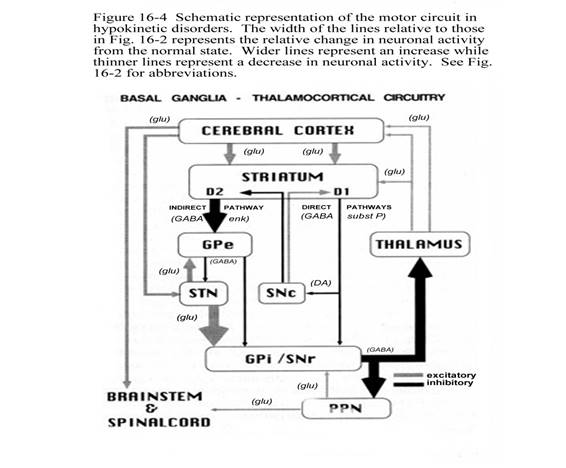

POREMEĆAJI POKRETA
-bitan je indirektni i direktni put
-tremor i distonija- u principu to je jedan te isti poremećaj u podlozi, ali ovisi koji prije započne
BG:
-putamen + GP= nucl. lentiformis
-n. caudatus + n. lentiformis= corpus striatum (90% - „medium spiny“ neuroni, 10% interneuroni)
MESENCEPHALON: - substantia nigra (SN)- nalazi se između cerebralnog pedunkla i tegmentuma mezencefalona u razini kvadrigeminalne ploče- (pars compacta i pars reticulata)
- nucleus ruber
FUNKCIONALNI DIO BG:
*diencefalička jezgra: - n. subthalamicus (corpus Luysi), nukleusi retik. formacije, donja olivarna jezgra
*cerebelarne jezgre
*lateralne vestibularne jezgre
*zona incerta
*interpendunkularne jezgre
*darkscheviceva jezgra
*intersticijska jezgra (Cajal)
*siva tvar lamine quadrigeminae
-amigdala i klaustrum- anatomski su dio BG, ali funkcionalno su dio LIMBIČKOG sustava!
OSNOVNI NEURALNI KRUGOVI:
1) kortiko-kortikalni neuralni krug
-kora- putamen-caudatus –GPi i talamus- kora
2) nigrostrijatalni krug
–SN- corpus striatum (n. caudatus+n. lentiformis)
3) strijato-palidalni krug
- n. lentiformis (caudatus + putamen) + n. subthalamicus + GPi
-nigrostrijatalni put je najvažniji!- to je zatvoreni sustav
+ petlja neurona- neuroni s aksonima koji se vraćaju natrag
-FARMAKOLOŠKI: dopamin, ACh, GABA, Glu
RASPODJELA DA REC. U MOZGU:
- D1 - D5 = cerebralni korteks, limbički sustav
- D3 + D5 = hipotalamus
- D1 + D2 = corpus striatum
SINUKLEOPATIJE
*PD
*MSA
*LBD
TAUPATIJE
*PSP
*CBD
*PDC Guam –zove se još i Lytico-Bodig (kompleks PD i demencije + ALS)
*POSTENCEFALITIČKI
*AD
*FTD s MAPT mutacijom
UBIKVITINOPATIJE
*FTD-17
*FTD-ALS
PARKINSONIZAM
-obilježava ga tremor, bradikinezija, rigiditet, lezija posturalnih refleksa – 2 od 3 simptoma mora biti za dg
PODJELA PARKINSONIZMA:
1) PRIMARNI IDIOPATSKI PARKINSONIZAM
-sporadična PD
-familijarna PD
2) SEKUNDARNI
-jatrogeni – antagonisti (DA blokatori- antipsihotici, antiemetici, Ca- blokatori, antiepileptici, amiodaron, litij)
-NPH
-trauma
-Tm
-vaskularne bolesti mozga
-endokrinološki poremećaji (hipertireoza, hipoparatireoidizam)
-toksini (Mn, Hg, CO, cijanid, MPTP – metil-fenil-tetrahidropiridin (sintetička droga)
-upale (postinfekcijski, upala)
-metabolički
-paraneoplastički
-autoimuni
3) ATIPIČNI PARKINSONIZAM
-PSP
-CBD
-MSA
4) U SKLOPU NEURODEGENERATIVNIH BOLESTI
-Wilsonova bolest (WD)
-Huntingtonova bolest (HD)
-PKAN (Hallervorden-Spatzova bolest)
-demencije (LBD, FTD)
-SCA
-klinički znakovi parkinsonizma vidljivi su tek kod 70% ošteć. SN
-2 velike grupe poremećaja: - HIPOKINETSKO-RIGIDNI
- HIPERKINETSKI
1) HIPOKINETSKO-RIGIDNI
*tipični -Mb. Parkinson (PD)-70% idiopatski, ostali jatrogen, simptomatski, vaskularni
*atipični parkinsonizam- PSP, CBD, MSA, LBD
- progresivniji su oblici nego tremor dominantni
- Lewijeva tjelešca se mogu naći i periferno – danas više nisu patognomonična, ali postoji korelacija s hipokinetsko-rigidnim sy
-jako su osjetljivi na antidepresive
2) HIPERKINETSKI (DISKINEZIJE)
-korea, tremor, distonija, mioklonus, hemibalizam, tikovi
*hepatolentikularna degeneracija (Wilson)
-kod atipičnih parkinsonizma JAKO VAŽNO da ide vrlo progresivno
3) DRUGE DEGENERATIVNE BOLESTI
PARKINSONOVA BOLEST (PD)
-progresivna neurodegenerativna bolest zbog propadanja dopaminergičkih neurona pars compacte SN s projekcijama u strijatum
-ETOIOLOGIJA:
-smatra se da je uzrok interakcija genskih i okolišnih čimbenika (MPTP je primjer)- poremećaj funkcije mitohondrija- oksidativni stres kojem je SN najviše sklona (bogata ionima Fe2+)
-povezuje se i s pesticidima, a pušenje i kava navode se kao zaštita
GENENTIKA:
-do sada je pronađeno 18 lokusa
FAMILIJARNI PARKINSONIZAM
- to su mongenske forme PD
-AD- PARK 1 (PARK-SNCA)- vezan uz hiperprodukcija alfa- sinukleina
- PARK 8 (LRRK 2)
- PARK 17 (PARK-VPS35)
AR - PRKN1
- PARKIN 1 (vezan uz distoniju)- rani početak
- DJ1
- PINK1
- ATP13A2
-< 21 god. pojava bolesti = JUVENILNI OBLIK
- 21.-51. god = RANI početak PD – UVIJEK pomisliti na Mb. Wilson!!!
->51.g. – KASNI početak
PATOMEHANIZAM:
- oštećenje nigrostrijatalnog sustava: SN - ↓DA --↑ACh u strijatumu, a strijatum natrag inhibira inače SN preko GABA-e, ali i strijatopalidalnog puta
-patološka pojava Lewyjevih tjelešaca u BG, simpatičkim ganglijima, i spinalnoj moždini - sastoje se od alfa-sinukleina, pojavljuje se i u drugim ND bolestima (LBD, MSA…)
*DIREKTNI PUT
-kortikostrijatalni input (Glu - preko – D1 rec. ) povećava inhibiciju strijatalnih projekcija (GABA i supst. P) DIREKTNO na GPi / SNr
-to dovodi do: A) dezinhibicije talamusa, a time i do:
B) facilitacije korteksa= facilitacija pokreta
*INDIREKTNI PUT:
-kortikostrijatalni input (Glu-preko D2 rec.) povećava inhibiciju strijatalnih projekcija (sadrže GABA i enkefaline) INDIREKTNO preko GPe i STN (Glu) koji snažno facilitira GPi/SNr
-to dovodi do: A) inhibicije talamusa, a time i do:
B) inhibicije korteksa = inhibicija pokreta
U NORMALNIM UVJETIMA
-SNc šalje obje vrste podražaja (ekscit/D1. i inhib./D2) u striatum
-inhibicija ide dalje u GPe, a od tuda dalje u STN koji ekscitira GPi/ SNr- od njih se šalje ponovo inhibicija prema VL jezgru talamusa koja ekscitira korteks, a korteks ekscitira ponovo striatum, ali i m. deblo te spinalnu moždinu
-PD
-nema nikakvih impulsa iz SNc prema striatumu
-pa sada striatum indirektnim putem snažno inhibira GPe koji sada puno manje inhibira STN koja sada nije toliko inhibirana pa šalje snažnu ekscitaciju u GPi/SNr
- s druge strane striatum direktnim putem manje inhibira GPi/SNr nego inače
- sve to rezultira snažnijom inhibicijom talamusa koji sada slabo ekscitira korteks, a on manje ekscitira ponovo striatum, m. deblo i spinalnu moždinu 
- RIZIKOFAKTORI
-raste s dobi, + obiteljska anamneza, pesticidi, ozljeda mozga, REM poremećaj spavanja, depresija, konstipacija
-ZAŠTITNI FAKTORI: kofein i cigareti
-širenje patologije PD nalikuje na prionsku bolest
-„ulazak patogena“ u mozak
1) preko možd. debla (domin. simptomi RBD, disautonomija)
2) olfaktorno –limbički (depresija/anksioznost)
3) neokortikalni put
2 PODTIPA PD:
1) tremor dominantni (sporija progresija, kognitivno manje oštećeni, depresija)
2) hipokinetičko-rigidni s post. instabilnosti –slabije reagiraju na L-dopu
SIMPTOMI:
-pojavljuju se tek nakon oštećenja oko 70% DA neurona
1) BRADIKINEZA
-to je prvi i najznačajniji simptom koji se mora utvrditi
-usporenje pokreta (ali mora biti i promjena i u amplitudi)
-prate ju i hipokineza (osiromašenje pokreta ili veličine pokreta)
2) RIGIDITET
-Fromentov znak- pojačanje otpora na pasivni pokret, a kod istodobnog pokreta u drugom ekstremitetu uz „fenomen zupčanika“- pojačava se uz distrakciju
-na strani gdje je izražen rigiditet, često se prethodno javi cerviko-brahijalni sy zbog smanjenih pokreta, također teško im se ustati iz fotelje ili okrenuti u postelji
3) AKINETIČKI TREMOR
-početak je obično asimetričan i distalni (najčešće jedna ruka), potom kasnije ide proksimalnije, pa na drugu stranu, s vremenom zahvati i istostranu nogu, a nakon više godina i generalizirani oblik
-tipično akinetički tremor (4-6 Hz) u 70% sluč. (pronacijsko-supinacijski oko osi ruke ili „pill-rolling“)-može fluktuirati, pojača se u emoc. stresu, smanji se u izvođenju kretnji no izostanak tremora u mirovanju (čak do 30%)- NE ISKLJUČUJE PD
-često tremor brade i usne
-općenito loše reagira na L-dopu
TH/ najviše pomažu antikolinergici no imaju svoje nuspojave (kognitivna deterioracija, retencija, konstipacija, zamagljen vid)
4) POSTURALNI INSTABILITET
- nevezano uz leziju vida, cerebeluma, vestib. ili drugog sustava
-ledirani su posturalni refleksi
-javlja se obavezno nakon više godina!!!
OSTALI MOTORIČKI SIMPTOMI:
- hipomimija, hipofonija, reducirana sinkineza, mikrografija (zbog hipokinezije), otežano ustajanje, započinjanje hoda („freezing“- u kasnijoj fazi- fokusiranom pažnjom i vanjski stimulusi mogu pomoći kod inicijacije pokreta) i rotacija, fleksijsko držanje tijela (kamptokormija, „Pissa sy“) + skolioza (nakon puno godina), hod sitnim koracima, nekad sve brže sve manjim koracima (festinacija), disfagija (kasnije se javi).
NEMOTORIČKI SIMPTOMI:
-RBD, hiposmija i konstipacija – snažna povezanost s PD koji se GODINAMA prije jave
-depresija i anksioznost (35%)- može biti posljedica neurodegeneracije jezgara u m. deblu što dovodi do disfunkcije noradrenalina i 5-HT sukladno Braak stadiju početka boelsti, odnosno može se pojaviti godinama prije tipične kliničke slike
-demencija –isključiti moguće nuspojave antikolinergika (Th/ rivastigmin)- ovdje memantin nema tako dobre rezultate
-poremećaj spavanja, RLS
-urgencija, retencija, inkontinencija, impotencija
-autonomni poremećaji (ortost. hipotenzija, dispneja, znojenje, crvenjenje lica, hipertermija)
-kognitivni poremećaji (MCI)
1) frontalni egzekutivni poremećaj – ↓prefrontalna DA aktivnost (dati COMT)
2) posteriorni kortikalni poremećaj – kolinergički deficit (alfa -sinuklein duplikacija/triplikacija, APOE, GABA, MAPT geni)
OPREZ!!! antikolinergici, MAO-B inh. i ostali agonisti (kod kognitivnih poremećaja lakše se izazivaju halucinacije!
-blefaroklonus i blefarospazam, Meyersonov znak
- halucinacije i psihoza – isključiti nuspojave dopaminergika i sek. uzroke (SDH, tox-metaboličku encefalopatiju, infekcije)
PATOANATOMIJA PARKINSONOVE BOLESTI
-BRAAK STADIJI:
1. STADIJ –zahvaćena je dorzalna motorička jezgra n. vagusa (DMV)- konstipacija, anosmija, denervacija srca
2. STADIJ- širenje u „gain setting nuclei“ (locus ceruleus, raphe jezgre i gigantocel. retik. jezgre)
- REM poremećaji, depresija (locus ceruleus, PPN-pedunkulo-pontini nukleus)
-to je presimptomatska faza, vezana uz pojavu inkluzija tjelešaca u tegmentumu ponsa, olfaktomotoričkom bulbusu i produženoj moždini
3. STADIJ- zahvaća SNc i okolne strukture mezencefalona, magnocelul. jezgru FB mozga, amigdalu
4. STADIJ- zahvaća korteks s početkom u AM dijelu T korteksa - simptomatska faza bolesti
5. STADIJ- neokorteks s lezijama senzornim asocijativnim i prefrontalnim arejama
6. STADIJ- zahvaća cijeli korteks, senzorne asocijativne regije, premotorne i ev. prim. motorne i senzone regije– može se razviti i demencija
POČETAK:
*bolest započne u dorzalnoj motoričkoj jezgri n. vagusa (DMV) u ponsu, a istodobno i u FB korteksu (olfaktorne strukture)- potom napreduje rostralno m. deblo, tegmentum ponsa i iz FB dijela mozga do korteksa
-pretpostavlja se da nepoznati neurotropni antigen uđe u tijelo u 1) GI trakt te retrogradno kroz projekcijske neurone ulazi u CNS šireći se sinaptičkim prijenosom i 2) kroz nos što objašnjava olfaktorne simptome – teorija „dvostrukog hica“
-čini se da su kortikalni i subkortikalni neuroni s debelim slojem mijelina te s kratkim aksonom rezistentni, dok su oni s dugim, tankim mijeliniziranim aksonima jako osjetljivi
DG/
-isključiti sek. uzroke
1) DAT-SCAN- smatra se zlatnim standardom- to je SPECT (s joflupan -123I)- veže se na presinaptički DA transporter – prikazuje oštećene funkcije DA sustava BG (smanjeno nakupljanje transportera) – ne smije tada uzimati SSRI, SNRI i memantin th radi lažno pozitivnih nalaza, međutim L-dopa ili DA agonisti imaju vrlo mali ili nikakvi utjecaj !
-odlična metoda za granične slučajeve od ET, sek. parkinsonizma ili distonije
2) PET-CT – također isto prikazuje
3) MIBG srca – srce se ne prikazuje zbog denervacije, tj. ↓DA rec.
4) TCCD- abnorm. hiperehogenst SN >90% pozitivna + norm. ehogenst n. lentiformis
-može diferencirati PD od parkinsonizma
5) olfaktorni test – osjetljiv za PD u presimptomatskoj fazi, ali ima malu specifičnost
6) HISTOPATOLOŠKI: nalaz Lewyijevih tjelešaca (eozinof. citoplazmatske inkluzije), ali samo u primarnom parkinsonizmu
-Lewyjeva tjelešca- sastoji se od alfa-sinukleina, pojavljuje se i u drugim ND bolestima (LBD, MSA…)
7) MoCa – test kliničke procjene kognitivnih promjena
8) Hoehn&Yahr -procjena napretka bolesti
1.0 – unilateralna zahvaćenost
1.5 – unilateralna i aksijalna zahvaćenost
2.0 – bilateralna zahvaćenost bez poremećaja ravnoteže
2.5 – blaža bilateralna bolest s kompenzacijom na test povlačenja za ravnotežu
3.0 - srednje do teška bilat. prezentacija uz blaži porem. ravnoteže, još uvijek
neovisan
4.0 – teško onesposobljen, ali još može hodati bez asistencije
5.0 – ovisan o kolicima ili nepokretan
9) UPDRS scala (3 dijela)- za praćenje Th odgovora pacijenta ( obično 1x učiniti u 3 mj):
1) ponašanje i raspoloženje
2) dnevna aktivnost
3) motorni znakovi
Brain Bank Criteria:
1) ključni simptomi
bradikinezija+ još barem 1 simptom
-rigiditet
-tremor 4-6 Hz u mirovanju
-posturalni instabilitet nevezano uz leziju vida, cerebeluma, vestib. ili proprioceptivnog sustava
*moguća PD- samo 1 simptom
*klinički vjerojatna PD- 2 simptoma
*definitivna PD- klinički vjerojatna + dobar odg. na L-dopu
2) isključiti druge uzroke
- postencefalitički, posttraumatski (po tipu boksača), vaskularni, hidrocefalus, kompresija, toksični (Mn, MPTP, CO, cijanid, CS2), jatrogeni (DA blokatori- antipsihotici, antiemetici, Ca- blokatori, antiepileptici, amiodaron, litij), slab odgovor na L-dopu, strogo unilateralna prezentacija nakon 3 god.
3) suportivna obilježja (barem 3 kriterija)
- unilateralni/asimetričan početak uz postupni prelazak na drugu stranu, izvrstan odgovor na L-dopu kroz barem 5 god, tremor u mirovanju, diskinezije na L-dopu, sporoprogresivni tijek kroz barem 10 god
TH/
!po novome : započeti odmah ispočetka kombinaciju L-dope i agonista, a antikolinergici se danas izbjegavaju (tako kaže Relja)
-po Continuumu (2016.g): i dalje princip mlađima i s očuvanom kognicijom te bez komorbiditeta agonisti, a ako imaju i izražene motoričke simptome onda i L-dopu, a starijima s komorbiditetima, postur. nestabilnošću= L-dopa
1) L-DOPA
-zlatni standard, ima kratko T1/2 i uvijek se kombinira s inhibitornima dekarboksilaze (karbidopa, benzerazid)
-dozira ju se inicijalno 2-3x125 mg/dan (ujutro, rano prijepodne i rano uvečer 45 min prije jela), kasnije povećava broj doza po potrebi do većih nuspojava, a između doza ne kraće od 3h
-inicijalno slabi th odgovor ne isključuje odmah PD!
-prvih 3-5 god. Th je ok, ali dolazi do ↓učinka lijeka te do motoričke fluktuacije na kraju doze prije uzimanja sljedećeg lijeka („wearing off“) te se mogu javiti „on-off“ fenomeni koji ne zavise od vremena uzimanja lijeka
-preživljavanje bolesnika s L-dopom je jednako kao u općoj populaciji
- u biljci BOBU ima puno L-dope
NUSPOJAVE: diskinezije (nakon nekoliko god), anoreksija, mučnina i povraćanje (utjecaj D2 rec. na perif.), somnolencija, halucinacija, hipotenzija
2) AGONISTI
-stimuliraju strijatalne postsinaptičke DA receptore
- imaju puno duži prosjek vremena poluraspada od L-dope (2h) pa su i manje oscilacije
-u starijih osoba često uzrokuju halucinacije, smušenost i psihoze
Ø SELEKTIVNI MAO-B INHIBITORI
-blokiraju oksidaciju i razgradnju dopamina u strijatumu, prorjeđuju učestalost doza L-dope
*selegilin- djeluje na postsinaptičke receptre, s njim možemo smanjiti dozu L-dope
- doza: 1-2x5 mg/d, kasnije 2x 5 mg/d
*rasagilin- 0.5 -1 mg/d (inicijalno), kasnije 1 mg/d
Ø OSTALI
*pramipeksol- 2-3x 0.125mg/d (inicijalno), kasnije 2-3x 0.5-1.5 mg/d
*s produljenim oslob.= do 1.5-4.5 mg/d
-smanjuje depresiju i smanjuje motorne simptome
*rotigotin (patch) -2 mg/d (inicijalno), kasnije max. 6 mg/24h
*ropinirol – 2-3x 0.25 mg/d (inicijalno), kasnije 2-3x 2-8 mg/d
* s produženim djelov.-2 mg/d (inicijalno), kasnije 8-24 mg/dan
*amantadin
-ima i dodatno antikolinerg. i antiglutaminergička svojstva
-može smanjiti tremor i diskinezije
-doziranje: 2x100 mg/d (inicijalno), kasnije 2-3x100 mg/d (ne kasnije od 17h popodne)
-NUSPOJAVE: bradikardija, halucinacije, psihoza, edem nogu, livedo reticularis, edem korneje
Ø COMT- INHIBITORI
- ↑razinu DA na periferiji- sprečava se razgradnja L-dope
*entakapon (Comtan)
*tolkapon (Tasmar)- jako je hepatotoksičan
KONTRAINDICIRANO: kombinacija uz SSRI ili TC antidepresivi
3) APOMORFIN
-agonist dopamina koji se primjenjuje parenteralno u epizodama nepokretnosti („off“ periodi)
-potrebno ga je davati s antiemetikom
- vrlo lako uzrokuje halucinacije i diskinezije
4) ANTIKOLINERGICI
- danas ih se ugl. izbjegava, ali mogu se upotrijebiti za tremor dominantni oblik PD
*biperidin (Akineton 2 mg)- 1x1/2 tbl, postepeno do 3-4x2 mg, max 4x4 mg/d
*benztropin- 1x0.5 mg (inicijalno uvečer), kasnije 2-3x 1mg/d
*triheksifenidil
*amitriptilin (on je najprihvatljiviji)
5) BENZODIAZEPINI
- za anksioznost
*alprazolam (Xanax, Helex, Misar),
*klonazepam (izvrstan za spavanje kod njih)
6) ATIPIČNI NEUROLEPTICI
-za psihotičke manifestacije, halucinacije ili psihomotoričku agitiranost
*kvetiapin – preferirani lijek, manje nuspojava, manje doze (12.5-25 mg) se primjenjuju čak i za nesanice
* klozapin – manje poželjan lijek
7) ANTIDEMENTICI
* rivastigmin - 2x1.5 mg/d (početna doza), dalje tek nakon 2 tjedna postupno povećavati do podnošljivosti 2x3 mg/d, max do 2x6 mg/d
-memantin ovdje ima loše rezultate
VRSTE DISKINEZIJA:
1) „peak-dose“ diskinezije
– obično 1-2h nakon uzete Th (najčešće korea i distonija, može i mioklonus ili balizam ekstremiteta)
Th/: treba liječiti samo one kojima smeta za norm. funkcioniranje po danu jer bi oni radije tako nego da imaju „off“ periode
-najefikasnije je dati amantadin u ovoj vrsti diskinezija, ali može se probati reducirati ili maknuti jedan od agonista radije nego L-dopu
2) „low -dose“ diskinezije
-ovdje se javljaju na kraju doze ili u „off“ periodu i to obično u vidu distonije koja zahvaća noge ili stopala
TH/ efikasna je i redukcija L-dope
-treba provjeriti prije da ne uzima L-dopu zajedno s hranom nego 45 min prije jela, također usporena peristaltika (zbog bolesti ili antikolinergika) usporuje apsorpciju, spominje se i veza motornih fluktuacija s H. pylori, provjeriti da li je na nekoj dijeti
OSTALE METODE LIJEČENJA:
1) NEUROKIRURŠKE METODE
*DBS – u GPi ili STN, odnosno VIM talamusa (tremor dominanti oblik)
- elektrode se postavljaju bilateralno
- potrebno je dobro selekcionirati pacijenta- ne smije imati psihijatrijske poremećaje, povoljnije je da je mlađi- ne stariji od 70 god, mora biti kognitivno očuvan (MMSE >24)
- poslije implantacije ne smije se prenaglo reducirati L-dopa
-osim duodope i DBS-a, postoji opcija lezijske kirurgije (termokoagulacija)
-preporučiti fizioterapiju svima s „freezing“ periodima
*neuroablativne metode- talamotomija i palidotomija
-TALAMOTOMIJA- najbolji efekt na tremor, dok slabo djeluje na rigiditet, bradikineziju, motorne fluktuacije i diskinezije
-PALIDOTOMIJA- bolji učinak na sva tri kardinalna simptoma + diskinezije
*neuralna transplantacija
-transplantacija autolognim adrenalnim medularnim st. i epitelnim stanicama s retinalnim pigmentom – slab th učinak
*genska terapija –slab th učinak za sada
-„punding“ – opsesivno, repetitivno i stereotipno ponašanje koje je bez svrhe, a javlja se samo nakon L-dope (za razliku od OKP)
„dopamin dizregulacijski sy“ – tipično kod mlađih kod uzimanja visokih doza agonista, slično ponašanje „pundingu“
-ako ima naznaka blage demencije- opcija je duodopa (ako ima rezistentne diskinezije koje ometaju dnevnu aktivnost)
*nuspojave amantadina- bradikardija!!,seroton. sy., dermatološki simptomi, halucinacije
2) DUODPA PUMPA
- za one kod kojih je teško medikamentima postići stabiliazciju, a nisu pravi kandidati za DBS
-aplicira se putem gastrostome/PEG-a
- komplikacije: infekcija, začepljenje, ako se isčupa
3) APOMORFIN- kratkodjelujući agonist dopamina (4-10 min), aplicira se putem pumpe ili injekcije (PEN)-tremor ima slabiji odgovor na L-dopu
-nema prednost u odnosu na duodopa pumpu
4) FIZIKALNA TERAPIJA; OKUPACIJSKA TH, TERAPIJA VJEŽBANJA GOVORA I KOGNITIVNE VJEŽBE
-fizikalna terapija svima s „freezing“ periodima
*kada oralna th iznevjeri – DUO, APO, DBS (vrlo brzi učinak, ali brzo dođu i nuspojave jer progresija neurodegeneracije napreduje)
ATIPIČNI PARKINSONIZAM (parkinson plus sy)
-karakterizira ga ↓odgovor na L-dopu
- obično su rano nastali, brzo progresivni, demencija se javi odmah na početku, nedostatak tremora, rani poremećaji hoda, piramidni simptomi, također rana disautonomija, rano ledirani posturalni refleksi, porem. bulbomotorike, apraksia, stridor, cerebelarni simptomi, inkontinencija, posturalna hipotenzija
+ prisutnost drugih simptoma ili bolesti: hidrocefalus, encefalitisi, ICV, lijekovi, Mb. Wilson, toksini, infekcije, nasljedni poremećaji (FTD), distonija, Huntigton, nasljedne ataksije
-općenito kad netko rano završi u kolicima unutar 5 god- jako sumnjivo na atipični parkinsonizam („Wheelchair sign“)
MULTISISTEMNA ATROFIJA (MSA)
- naziva se još i Shy-Dragerov sy, „olivo-ponto-cerebelarna atrofija“
-sporadična neurodegenerativna bolest-spada u alfa- sinukleinopatije oligodendroglije u nigrostrijatalnom sistemu, ponsu i cerebelumu
-početak bolesti s oko 50-55 god., ako se prije jave simptomi, to onda vjerojatno nije MSA
-3 oblika:
1) MSA-P - dominantno parkinsonizam – najčešći (80% sluč)
-može ga se diferencirati od PD zbog više simetrične pojave, atipičnog tremora, distonije vrata-antekolis, rana dizartrija, ošteć. hoda i ravnoteže, dizautonomija i brza progresija
-loše reagira na L-dopu
2) MSA-C - dominantno cerebealrni sy- vrlo čest uzrok ataksije u odraslih
3) MSA-A - dominantno autonomni poremećaj- neki ga spominju kao zasebni poremećaj
-dominatno se javlja rano AUTONONMNA DISFUNKCIJA- u 99% slučajeva- posturalna hipotenzija (20%- sinkope), impotencija, urinarna disfunkcija (retencija urina je vrlo česta- za razliku od PD), vlažne i hladne ruke
- NEMA demencije!!
- slab odgovor na L-dopu, javlja se piskutav glas, risus sardonicus (OM distonija) uz anterokolis i bol u vratu i ramenima („coat hanger sign“)
-piramidni sindromi- 30% sluč, rijetki tremor u mirovanju
-tu je moguć slab njuh, ali diskretno, porem. spavanja =40%, respiratorna disfunkcija
- disfagija s progresijom, mioklonus, znakovi piramidne lezije i Babinski, noćni laringealni stridor, dizartrija
DG/
*klinička slika
*MRI- MSA-P= olivopontocerebelarna degeneracija ili atrofija putamena, u T2 linearni hiperintenziteti paraventrikularno, a na FLAIR-u hipointenziteti (nakupljanje željeza)
-MSA-C= atrofija ponsa i cerebel. pedunkla + karakteristični križ u ponsu („hot cross bun sign“)
*PET- smanjen metabolizam glukoze u strijatalnom sustavu i frontalnom režnju
*DAT SCAN- također tipično pokazuje asimetriju vezanja DA transportera u strijatumu
*testiranje veget. živčanog sustava + QSART
*urodinamika
*polisomnografija (ako je upitna RBD)
TH/
-liječenje je limitirano i suportivno, neki ispočetka djelomično reagiraju na L-dopu
PROGNOZA:
-loša, brzoprogresivni tijek bolesti, prosjek preživljenja je od 6-9 god.
PROGRESIVNA SUPRANUKLEARNA PARALIZA (PSP)
- to je TAUPATIJA, javi se obično oko 65-te god. života
- žive u prosjeku 8-9 god od dg
-ugl. je sporadična bolest, vrlo rijetko je familijarna- AD nasljeđivanje, najčešća kod atipičnog parkinsonizma
-PATOLOGIJA:
-nakupljanje tau-proteina u stanicama zbog hiperfosforilacije (inače je potreban za stabilizaciju mikrotubula) – degeneracija neurona u ponsu, nucl. dentatusu malog mozga i BG, međumozgu
PATOHSITOLOŠKI:
-javljaju se „čupavi neuroni“, neurofibrilarna tau vlakna, gubitak pigmentnih stanica u SN, gore navedena atrofija, ovoidna tjelešca
-nakupljanje tau proteina uglavnom pošteđuje korteks
- smanjena je konc. DA, gubitak strijatalnih neurona + njihovih postsinaptičkih rec. (zato je slab odgovor na L-dopu i agoniste)
- povezan je s MAPT genom koji ga kodira no taj gen je intaktan u sporadičnoj bolesti, a mutacija je najviše povezana s FTD varijantom na 17. krom.
- međutim, otkrivena su 3 nova gena koja se povezuju s PSP-om (STX – za protein sintaxin 6), EIF2AK3 i MOBP- za mijelin vezani oligodendrocitni bazični protein)
GLAVNI SIMPTOMI:
- pareza pogleda isprva vertikalno, kasnije i horizontalno!, apraksija otvaranja/zatvaranja očiju
- rana posturalna instabilnost u anamnezi (tipično padaju unazad), „rocket sign“- kod izdizanja iz stolice nemaju stabilnost
-rani znakovi pseudobulbarne paralize (disfagija- najopasnija, dizartrija- svi mumljaju (…hmmmm…), disfonija, pojačan mandibularni refleks, patološki smijeh/plač
- „procerus sign“- znak m. frontalisa- svi naboraju čelo
-rigiditet mišića trupa i vrata, nuhalna distonija (13% slučajeva), retrokolis, ali normalan njuh!
-lezija frontalnog režnja –fenomen „aplauza“, palilalija, ↓verbalna fluentnost, govor poput robota
- razvoj demencije
- vrlo rijetko tremor u mirovanju
KLINIČKI PODTIPOVI:
PSP- parkinsonizam – najčešća varijanta PSP-a
DG/
*klinička slika –vjerojatna dg.- gore navedeni simptomi
-definitivna dg – gore navedeni simptomi + patološki dokaz
*MRI –atrofija mezencefalona/moždanog debla („znak pingvina“, „znak kolibrića“) uz zahvaćanje gonjih kolikula i gornjih cerebelarnih pedunkla
*FDG-PET CT- područja hipometabolizma u frontalnoj kori, strijatumu , talamusu, i malom mozgu
TH/simptomatska –L-dopa (treba je dati u većini slučajeva ako ima motorne fluktuacije, pogotovo s dominantnim parkinsonizmom, obično djelomično djeluje u početnom stadiju bolesti) - DA, klonazepam, botox, tricikl. AD, - kratkotrajna th
- amantadin – stalna Th!
- procjena disfagije svakih 6 mj (procjena potrebe NGS ili PEG-a)
- kognitivna rehabilitacija i rehabilitacija govora
KORTIKOBAZALNA DEGENERACIJA (CBD)
-to je također TAUPATIJA jer se intracelularno taloži hiperfosforilirani tau protein u BG i korteksu, najrjeđe se pojavljuje i to u srednjoj i starijoj dobi
- obzirom da započne s asimetričnom rigidnošću i bradikinezom- često se krivo dg ispočetka kao PD
- u ranoj fazi nastaje gubitak posturalnih refleksa- učestali padovi
- tremor je vrlo rijetko prisutan, miješanog je karaktera (akinetičko-kinetički)
-dominantna je distonička postura udova (obično ruke) s osjećajem da se radi o stranom tijelu („allien hand“)
-česti su kortikalni osjetni simptomi- astereognozija, ekstinkcija, moguća i hiposmija
-APRAKSIJA (ideomotorna) je jako tu značajna (nema je kod drugih parkinsonizma)-orobukalna ili apraksija ruke
-pojavljuje se i akatizija (stereotipni obrazac nervoznog ponašanja)
-„restless legs sy“, startle mioklonizmi, simptomi frontalne dezinhibicije, dizartrija, demencija puno kasnije, a sačuvana je semantička memorija
RAZNI FENOTIPOVI CBS
DG/
*MRI – asimetrična FP atrofija više na zahvaćenoj strani udova
*PET CT – (fluorodopa) hipometabolizam u strijatumu i asimetrične zone hipometabolizma u F režnju
TH/ obično simptomatsko, nema pravog liječenja za to
PROGNOZA: smrtni ishod unutar 10 g.
BOLEST LEWYJEVIH TJELEŠACA (LBD)
- također sinukleinopatija
-PATOHISTOLOŠKI:
-Lewyijeva tjelešca – obilježje DLB (ali nalazimo ih i u MSA i u PD)
-DOMINANTNO: rana demencija i rane halucinacije, ali i epizode delirija
- specifično je da halucinacije više smetaju okolinu nego pacijenta, halucinacije na L-dopu
-parkinsonizam, nestabilnost, padovi, depresija, RBD,
-narušena je koncentracija, vrlo rana autonomna disfunkcija (čak ranija pojava od CBD)
- karakteristična je INTOLERANCIJA na antipsihotike
DG/ *PET-CT - hipometabolizam Glu u O i P korteksu
* DAT-SCAN
* CSF - ↓beta-amiloid, a ↑ukupni tau i ↑fosforilirani tau
TH/
- može se probati s L-dopom, ali se zbog halucinacija često istodobno koriste i antipsihotici (pa se tu ne kosriste agonisti)
-inhibitori kolinesteraze (rivastigmin i donepezil) i memantin- koriste se kod kognitivne deterioracije
VASKULARNI PARKINSONIZAM
-zove se još i „lower-body“ parkinsonizam („freezing“ u ranoj fazi bolesti)
-ima piramidne znakove, kognitivnu disfunkciju, relativno slab odgovor na L-dopu, a i na MAO-B inhibitore (ne podnose ga)
- prate ga depresija + inkontinencija
- većina pacijenata je značajno starija, imaju značajno manji /slabiji odgovor na L-dopu te posturalnu nestabilnost
RIZIČNI FAKTORI: HA, HLP, DM, ICV, pušenje, sleep apnea
DG/
* MRI- multiple vaskularne lezije ili lakunarni infarkti
-prati ga akutni razvoj + brza progresija
„YOUNG ONSET“ PARKINSONIZAM
-javlja se kod mlađih od 40 god.
- treba isključiti Mb. Wilson (WD) i Mb. Huntignton (HD)
-glavni simptomi su ataksija, asinergija, dismetrija
*SINDROM NEMIRNIH NOGU– Ekbomov Sy
„RESTLESS LEGS SY“ (RLS)
-glavno obilježje je akatizija nogu- neodoljiv poriv za pomicanjem nogu, a nastaje u mirovanju u sjedenju ili ležanju, pogotovo po noći
-najučestaliji uzrok poremećaja spavanja
- često je povezana s neuropatijom malih vlakana (povezana s DM, anemijom)
DG/ *testirati Fe, UIBC, TIBC, B12, folate, Mg, T4, TSH, osnovni lab.
*EMNG
*POLISOMNOGRAFIJA
TH/ GBP, opijati, CNZ, L-dopa, pramipeksol, bromokriptin, ropinirol, pergolid
+ higijena spavanja, izbjegavati kofein, alkohol, nikotin
+ probati ukinuti lijekove koji mogu izazvati taj sy (SSRI, SNRI, neuroleptici)
+ masaže, redovita fizička aktivnost
TREMOR
-to je ritmična oscilacija određenog dijela tijela
-kod pregleda: ruke moraju biti poduprijete podlakticama, a šake vise – POČETNA POZICIJA
*POSTURALNI TREMOR
- distonički
- funkcionalni (psihogeni)
- esencijalni
- ortostatski
- pojačani fiziološki
- rubralni
*TREMOR U MIROVANJU:
- PD
- rubralni
*KINETSKI (akcijski) TREMOR:
- cerebelarni
- distonički
- rubralni
- esencijalni
AKCIJSKI:
ESENCIJALNI TREMOR (ET)
-to je bilateralni (nekad blago asimetričan) akcijski i posturalni tremor (najčešće ruku, vrlo rijetko nogu) javlja se u bilo kojem periodu života- progredira tokom života
GENETIKA:
-AD nasljeđivanje (2. i 3. krom.), obično familijarna pojava, ali se može javiti i sporadično
KLINIKA:
-15% esencijalnog tremora je u MIROVANJU inicijalno (treba posumnjati na ET ako nema znakova parkinsonizma) ili kod uznapredovalog stadija
- više je distalan i po tipu fleksije –eksteznije nego supinacijsko-rotacijski
-po vremenu nastanka najčešći je:
1) kasni- nakon 60.god
2) rani – prije 40. god
-može biti često tremor glave/vrata (NE-NE, DA-DA)- ako je izolirani treba posumnjati da se možda radi prije o distoniji (ali tada ide uz hipertrofiju mukulature vrata -razlika od ET)
-nekad se javi tremor glasa (ali bez prekida u govoru kao u distoničkom tremoru glasa), nekad se može javiti fenomen zupčanika, ali nema znakova parkinsonizma,
- na alkohol se prolazno reducira tremor, a na kofein, nikotin se pojača
- npr. ne može jesti juhu ili ne može mirno držati list papira da pročita, ali može teže predmete kao npr. knjigu
-tu se ispituje tandem hod-gledaju se loše izvedeni koraci- ako ih je 3 ili više u 10 m – abnorm. nalaz
-def. dg. ET > 3 god. trajanja
-treba paziti kod ispitivanja ET cerebelarne lezije, najbolje s brzim alterirajućim pokretima
(npr. šaka u šaku)
DG/
*SPECT- pokazuje normalan dopaminergički sustav
TH/
1. LINIJA –propranolol (1-2x 40-120 mg/dan)- najefikasniji za ruke, najmanje za glavu i glas, PRM (do 3x50-150 mg/dan)-kod nas ga nema
2. LINIJA – TOP, GBP, CNZ, alprazolam, atenolol, sotalol
3. LINIJA -BOTOX- u slučaju slabog th odgovora, a da pacijenta onesposobljava u svakodnevnici
4. LINIJA - DBS u VIM (ventralna intermedijalna jezgra) talamusa ili čak STN (↓tremora za 60-90%)- ugl. za starije rezervirano
- talamotomija- vrlo rijetko
DISTONIČKI TREMOR
-to je tremor u ekstremitetu gdje je distonija
-može se javiti tremor u glasu (ali ovdje ide s prekidima u govoru) ili u vratu/glavi (ali tada ide uz hipertrofiju mukulature (razlika od ET)
-tremor nema niti ritmičku niti oscilatornu komponentu
-treba učiniti DAT-scan da bi razlikovali PD i distonički tremor
TH/ obično se prvo započne s propranololom, ali može i CLN
FIZIOLOŠKI TREMOR
-uglavnom je brže frekvencije od ET, može zahvatiti glas i udove, ali ne smije i glavu/vrat
-TH/ propranolol u nižim dozama i benzodiazepini
PSIHOGENI TREMOR
-ima nagli početak, bilateralni, smanjuje se kod distrakcije (kod koaktivacije ili brojanja)
-grub, naglašen je od početka - obično izostaje postupno pogoršanje, poluritmičan, složenog je karaktera, nalazi se u mirovanju i posturalno
ORGANSKI TREMOR:
-ritmičan, jači u pokretu, počinje postepeno, progresivno se pojačava, a i kod distrakcije se pojačava
LIJEKOVIMA UZROKOVAN AKCIJSKI TREMOR
-ugl. bronhodilatatori, litij, VPA, metilfenidat, prednizon, pseudoefedrin
-ovi lijekvi uzrokuju akcijski tremor
- ugl. na rukama, ali ne smije i glavu zahvatiti
-treba ili diskontinuirano dati lijek ili ga ukinuti potpuno – tada i tremor nestaje
- eventualno još malo i dodati propranolola
RUBRALNI TREMOR (međumozak) – Holmesov tremor
- vrlo sličan kao kod Parkinsona
- generalno je unilateralan, ima 3 komponente: tremor u mirovanju, posturalni tremor i akcijski/intencijski tremor (koji je i najizraženiji)
-može se javiti u sklopu Tm, MS-a, AVM-a, a može se pojaviti s latencijom nakon nekoliko mjeseci
-javlja se kod lezija međumozga, ali koji put i drugih lokacija (npr. talamus)
*amantadin- smanjuje tremor- antagonist NMDA rec- veže se za Glut. rec.
CEREBELARNI TREMOR
-često ide uz SCA, klasično javlja se akcijski tremor s kinetičkom i intencijskom komponentom
- poprilično je spor, 3-4 Hz, uz prisustvo drugih cerebelarnih znakova (dismetrije, disartrija, ataksija hoda i hipotonija mišića nogu, nistagmus i sakade očiju)
TH/ teško ga liječiti, a najefikasniji je DBS talamusa
PRIM. TREMOR PISANJA
-javlja se samo pri pisanju, isključuje ga tremor kod distonije ruke
-isto reagira na alkohol
-TH/ kao kod ET
ORTOSTATSKI TREMOR
-tremor koji je najjače izražen u tricepsu surae u ortostatskom položaju dok čovjek stoji, brz je 14-16 Hz
- dosta ga je teško liječiti, najviše se upotrebljava CLN, GBP, a koji put pomogne i L-dopa
TREMOR KOD WILSONOVE BOLESTI
-klasični tremor je „wing-beat“ tremor (abdukcija nadlaktica, a fleksija u laktu te ruka prema ruci okrenuta) no širok raspon tremora tu se javlja
TREMOR U FRAGILNOM X SY
-kombinacija akcijskog tremora (uglavnom) i tremora u mirovanju, cerebelarne ataksije, parkinsonizma i kognitivne deterioracije
TREMOR U SKLOPU PERIF. NEUROPATIJA
-može se javiti kod paraproteinemijskih IgM neuropatija
TREMOR U MIROVANJU
TREMOR U PD
-generalno započne asimetrično, bilo koji ekstremitet (češće ruke) i to distalni dio (zapešće ili prste), supinacijsko-roatcijskog je karaktera, uz često i fleksijsku posturu ruke u hodu
-može zahvatiti i vilicu i to kod zatvorenih ustiju (kod ET samo kod otvorenih ustiju!)
- iako neki imaju i posturalni tremor pa i akcijski
LIJEKOVIMA UZROKOVAN TREMOR U MIROVANJU
-primjer je kod uzimanja neuroleptika
- javlja se tremor u mirovanju kao u PD sa znakovima i parkinsonizma
SEKUNDARNI TREMOR
- njega prvo treba isključiti
-provjeriti T4 i TSH, ↓Na i ↓Ca, ↓B12, ↓PTH, bubrežna i jetrena funkcija, Cu2+ i ceruloplazmin, pitanje neuropatije, porfirije, toksikologije (alkohol, nikotin, kava, droga), potencijalnih lijekova
MIOKLONUS
-nagli, kratkotrajni nevoljni trzaj mišića udova zbog mišićne kontrakcije
-suprotno tome, zbog mišićne inhibicije, nastaje neg. mioklonus- npr. ASTERIXIS, ili može zahvatiti trup i donje ekstremitete (Lance-Adams sy) – dovodi do pada
-uvijek zahvaća istu mišić. skupinu, može biti iregularan ili regularan, kontuinuiran ili intermitentni
- u odnosu na pokret – spontani (u mirovanju), akcijski (tijekom radnje), refleksni (kod dodira, svjetl. podražaja…)
-EEG: karakterističan – ŠVK 3 Hz ili PŠVK 3-5 Hz nakon koje slijedi generaliz. usporenje aktivnosti
PODJELA PREMA DISTRIBUCIJI:
*fokalni
*segmentalni
*multifokalni
*hemimioklonus
*generalizirani mioklonus
*senzitivan na stimulus
PODJELA PREMA ANATOMSKOJ LOKALIZACIJI:
1) KORTIKALNI
-najčešće zahvaća distalne dijelove- obično fokalan (lice i ruke)-spada u akcijski mikolonus (tipično za vrijeme hoda ili govora) i startle mioklonus (senzitivnost za taktilni ili vidni podražaj)
-PIRMJERI: asteriksis, progres. mioklona ataksija, mioklonus u AD i CJD, u CBD, LBD, u posthipoksemijskim ošteć., ili induciran lijekovima
*poseban oblik EPC (epil. part. continua-Kojewnikoff) – predstavlja zapravo fokalni miokloni status (traje danima, satima, mjesecima)- najčešće uzrok Tm, elektrolitski dizbalans, infarkt mozga ili Rasmunsen encefalitis
2) SUBKORTIKALNI
A) nesegmentalni – mioklonus m. debla-generaliz. trzajevi najupečatljivije senzitivnost na zvuk
-2 glavna oblika:
1) startle oblik – prejaka reakcija na akustične ili taktilne podražaje, fiziološki i patološki (ne habituira se )-hiperekpleksija (nasljedna-AD mutacija alfa 1 glicinskog rec, idiopatska i simptomatska-npr. MS, upala, CVI…)
-taktilna osjetljivost u području glave, vrata, lica, vidni podražaji
2) retikularni refleksni mioklonus- učestala pojava spontanog mioklonusa i osjetljivost na podražaj distalnih dijelova udova
*mioklonus –distonija i mioklonus induc. lijekovima – smatra se da su subkortik. ishodišta
B) segmentalni – PALATALNI MIOKLONUS , odnosno TREMOR– 1-2Hz kontrakcije mekog nepca- najvjerojatnije kao disfunkcija ili lezija u Guillain-Mollaretovom trokutu (sveza između nucl. dentatusa, nucl. ruber i donjih olivarnih jezgara)
-može biti esencijalni (nestaje u snu, „klik“ zbog zatvaranja Eust. tube) i simptomatski (češći, perzistira u snu, nema klika)
*talamički – u apsans napadajima i u prim. generaliz. mioklonim epilepsijama
3) SPINALNI
A) segmentalni- obično simptomatski kod strukt. lezije (sirinks, mijelitis, trauma…), ograničena osjetljivost na nekoliko miotoma
B) propriospinalni- nastaje aktivacija aksijalne muskulature preko propriospin. puteva- trzajevi vrata, trupa ili kukova spontano ili kod ispitivanja refleksa-karakterističan je kratki vremenski razmak od podražaja do odgovora, postoji opisan i psihogeni oblik
4) PERIFERNI
-nastaje zbog lezije živca, korijena ili pleksusa
-hemifacijalni spazam je primjer
PODJELA PREMA ETIOLOGIJI
-4 glavne skupine:
1) FIZIOLOŠKI
-hipnagogni, štucanje, fiziol. startle odgovor, kod anksioznosti,…
2) ESENCIJALNI
- mioklonus distonija, obiteljski, sporadički
-tu je mioklonus jedini ili dominantni simptom
hereditarni- počinje prije 20-te g. života, AD (mutacija u ↋-sarkoglikanu-disfunkcija GABA rec.), dobroćudan tijek, češća pojava na gornjim dijelovima tijela, smanjuje se na alkohol, pojačava kod uzbuđenja
-primjer –DYT 11 (mioklonus distonija)
3) EPILEPTIČKI MIOKLONUS
– generalizirani, segmentalni ili fokalni
4) SIMPTOMATSKI MIOKLONUS
- u pravilu je posljedica kortikalne lezije, ali obratiti pažnju i na lijekove koje uzima!!
TH/ VPA, CNZ, LEV, TOP
A) UZROK. TOKSIČ. I METABOL. ČIMB.
-MEATBOLIČKI – insuf. bubrega i jetre, resp. insuf., hipo/hiperglikemija, hipo/hipertireozu, alkaloza/acidoza, hipoksija, deficit vit E
TOKSIČKI: alkohol, postdijalizantni (toksičnost aluminija), lijekovi (GBP, PGB, CBZ, LTG, PHT, PB, L-dopa, SSRI, litij, klozapin, cefalosporini, opioidi…Ca blokeri, kontrast
B) POSTHIPOKSIČKI MIOKLONUS
-obično nakon KR aresta
*akutni – unutar 12-48h, kao miokloni epi status
*kronični (Lance-Adams)- nakon nekoliko dana ili tjedana, perzistira
-može biti kombinacija poz. i neg. mioklonusa ili retikularni refleksni mioklonus
-akcijski mioklonus je glavna onesposobljavajuća karakteristika tog stanja
Th/ CNZ, LEV, VPA, ZON, PIR
C) U SKLOPU PME
-tu je mioklonus multifokalan, tipično zahvaća lice i dist. dijelove ekstremiteta, precipitiran posturom, akcijom ili stimulusima
D) U SKLOPU ANGELMANOVOG SY
-ekspresija bolesti oko 6. mj. života, teška psihom. zaostalost, ataksija, tremor, mioklonizmi sa statusima, sretni izraz lica uz paroksizme smijeha („happy puppet sy“)
E) U SKLOPU PROGR. MIOKL. ATAKSIJE
-poznate kao i Ramsy –Hunt sy
F) POVEZAN NEURODEG. BOLESTIMA
- u sklopu LBD, PD, MSA (poliminimioklonus- stimulus senzitivan iregularni mioklonus malih amplituda ruku i/ili prstiju u ispruženom položaju), CBD, rijeđe u PSP, HD; AD; CJD, WD, HSS (Hallervorden-Spatz- povezana s PKAN – pantotenat-kinaza –akumulacija željeza u BG –„eye of tiger sign“), Aleksanderove bolesti (fibrinoidna leukodistrofija), Alpersove bolesti (mitohondropatija- bolest jetre i poliodistrofija).
*PSIHOGENI MIOKLONUS
-pretjerane reakcije na provokaciju, varijabilna prezentacija iz dana u dan, prestaje distrakcijom pažnje
-za potvrdu treba učiniti neurofiziološku obradu
DISTONIJA
-trajna ili intermitentna mišićna kontrakcija u vidu abnormalnog držanja dijela tijela ili cijelog tijela zbog istovremene kontrakcije agonista i antagonista, a zahvaća uvijek iste mišiće
- nema neurodegeneracije, to je funkcionalni poremećaj
-prevalenciju je teško utvrditi
GENETSKO TESTIRANJE:
- kod mlađih < 30 god.
- >30 god ako ima oboljelog člana obitelji + da je prim. oblik
- NE- > 30 god s fokalnim oblikom
-NE- < 18 god. ili asimptomatski bolesnici
- Ž>M, najčešća u dobi s 50-70 god
- NAJČEŠĆI (Continuum 2016) genetski oblik izolirane distonije: DYT-TOR1A (delecija GAG tripleta za glutamin) i DYT THAP1(za protein torzin A) – prije zvani DYT 1
PATOGENEZA:
1) predložen model supersenzitivnosti na strijatalne DA rec. + abnormalnost GABA-ergičkih neurona u jatrogenoj distoniji
2) ↓serotonina i ↓5- hidroksiindoloctene kiseline, ali i abnormalnost DA i noradrenalina
„DOPA responsive“ distonija – NE profulati
DISTONIJA – može biti i nuspojava neuroleptika koja se manifestira najčešća kao retrokolis ili OMD
OPIS BOLESNIKA
-3 razine moraju biti opisane (dob, etiologija i distribucija)
NOVA PODJELA (Continuum 2016.):
DOB
*rana dječja dob (0-2 g)
*djetinjstvo (3-12 g)
*adolescencija (13-20 g)
- obično zahvaća donje ekstremitete, progresivnog karaktera, a kasnije se generalizira
*rano odraslo doba (21-40 g)
*kasno odraslo doba (>40 g)
- obično započne u vratu (+ larinks), kranijski mišići ili 1 ruka
-najčešće fokalna i obično ostaje lokalizirana
DISTRIBUCIJA
*FOKALNA- zahvaća samo 1 regiju (npr. cervikalna, larinegalna, blefarospazam, grafospazam,)
*SEGMENTALNA- zahvaća 2 bliske regije (npr. cervikalna + ruka)
*MULTIFOKALNA – zahvaća 2 regije koje nisu bliske (ruka i noga)
*GENERALIZANA- trup + barem 2 regije (s /bez nogu)
*HEMIDISTONIJA- više regija na 1 strani- misliti na sek. uzrok
VREMENSKI UZORAK
*statička
*progresivna
*akcijska
*diurnalna fluktuacija
*paroksizmalna –samoograničavajuća
VEZANA UZ OBILJEŽJA:
*izolirana –distonija s tremorom ili bez
*kombinirana
-s poremećajima pokreta (npr. mioklonus, parkinsonizam)
-s drugim NRL manifestacijama (npr.ataxia, demencija)
-sa sistemskim manifestacijama (npr. organomegalija)
FUNKCIONALNA (psihogena) DISTONIJA
-obično je „fiksirana“, na donjim udovima, posebno nakon traume
-ima nagli početak, mijenja smjer, ne varira s pokretom, neobičan grč, ima izraženu bolnu komponentu, brza generalizacija, bizarnost pokreta, sugestija je prisutna, ima remisija, paroksizmalni (samoograničavajući) poremećaji su učestali
-općenito, funkcionalni poremećaji pokreta budu prisutni čak do 1/3 sluč.
ORGANSKA DISTONIJA
-postupan, ali progresivan tijek, pozitivni senzorni trik, postoji dnevna varijacija, očekivani uzorak širenja, akcijska u početku
KOD 1. KONTAKTA:
PREPORUČAMO: obradu u sklopu hospitalizacije- isključiti org. uzrok
NE PREPORUČAMO: dg. odmah u amb., dugotrajna primjena placeba, podcijenti psihičke poremećaje, rana konfrontacija
ETIOLOGIJA
-PRIMARNA
*primarna generalizirana distonija (najčešće udružena s mutacijom DYT 1 gena- dakle radi se o DYT-TOR1A (delecija GAG tripleta za glutamin) i DYT THAP1(za protein torzin A)
- tu je distonija JEDINI kl. znak, nema poznatog uzroka
*primarna fokalna distonija
-najčešće bez mutacija, obično u odrasloj dobi, gotovo nikada ne zahvaća noge
-SEKUNDARNE
* HEREDODEG.- Wilsonov sy -ne profulati, HD, PD („off-period“ u PD), neuroakantocitoza, SCA…
*JATROGENE – L-dopa, DA agonisti, antipsihotici, AET, SSRI…
*STEČENE STRUKTUIRNE LEZIJE- lezije BG ili talamusa
-DISTONIJA PLUS SY
*dopa-responsive distonija (DYT 5)
*distonija-parkinsonizam s brzim početkom (lokus DYT 12)
*mioklonus-distonija (DYT 11)
PRIMARNA GENERALIZIRANA /IDIOPATSKA TORZIJSKA DISTONIJA
-osim distonije, bez drugih NRL simptoma ili znakova- potrebno je isključiti druge uzroke
-nasljeđuje se AD, AR ili X-vezano,
-AD mutacija (delecija tripleta GAG) je vezana uz DYT TOR1A za glutamin (prije DYT 1) lokus na 9. krom. i DYT THAP1(za protein torzin A) i glutamin- osobito česta u Ashkenazi Židova
*DYT TOR1A distonija je najznačajnija prim. distonija koja nastaje u djetinjstvu
- distonija je osobito izražena u pokretu, najčešće počne na nogama pa se proširi na cijelo tijelo- vidljiv je i blefarospazam, OMD, hiperpronacija ruke, fleksija/ekstenzija trupa…dok su kranijalni mišići pošteđeni
*DYT-THAP1 je također AD, zahvaća mlađe adolescente oko 16.god, pogođeni su brahijalni, cervikalni i kranijalni mišići, a i govor je zahvaćen često
-3 dodatna gena su detektirana za nastup distonije u odrasloj dobi (AD nasljeđ.):
*DYT-CIZ1
*DYT-ANO3
*DYT-GNAL
FOKALNA DISTONIJA
*cervikalna distonija
*piščev grč („writers cramp“)
*blefarospazam
*sopazmodična disfonija
*oromandibularna distonija (OMD)
CERVIKALNA DISTONIJA
-najučestalija fokalna distonija s abnormalnim držanjem glave
ETIOLOGIJA
- može biti PRIM. – jedini znak je distonija (DYT 1 može biti poz.), ali može biti prisutan i tremor- tada je to tremor –predominantna cerv. distonija (mutacija ANO3)
SEK.- trauma vrata (atlanto-aksijalna dislokacija), perinatalne ozljede, malformacije cervik. kralješnice, Arnold-Chiari malform. i lijekovi
KL. SLIKA:
-devijacija glave i vrata – tortikolis (okretanje vrata u horiz. smjeru)
retrokolis (vratna ekstenzija)
laterokolis (naginjanje vrata)
anterokolis (naginjanje prema naprijed)
-tremor glave (60%), ruku (20-30%), bol u vratu (75%)
-senzorni trik- mogućnost ispravljanja deformacije- govori u prilog prim. distonije (za razliku od psihogene / funkcionalne)
- ZAHVAĆENI MIŠIĆI- SCM, trapezius, splenius capitis, splenius cervicis, elevator scapulae, skalenski mišići
-DG/ neuroimaging- ugl. nije rutinski potreban za prim dyst., ali je neophodan za sek. distoniju
-TH/
*medikametno
1) antikolinergici – biperidin, trihexifenidil
- djeca mogu tolerirati visoke doze
-1. izbor za generaliziranu distoniju i distonički tremor, može i tardivna distonija
2) benzodiazepini- CLN (pomaže kod ne-kinesigeničke distonije), diazepam – nema dovoljno dokaza za preporuku
3) dopaminergička th. (carbidopa/L-dopa)
- kod „dopa responsive“ distonije, počne se polako titrirati , a pravi učinak vidljiv kod 300-400 mg- tu nisu opisani „wearing off“ fenomeni i motorne fluktuacije kod dugog davanja
4) antidopaminski lijekovi (blokatori D2 rec)- kod tardivne distonije
*haloperidol
*klozapin – inhibitor D4 rec. (opasnost od agranulocitoze)
*kvetiapin –
*tetrabenazin – inhibitor monoaminskog vezikularnog transportera tip 2 u CNS-u
-koristi se kao „off-label“ u tardivnoj distoniji (najviše pomaže), opisano da djeluje i u mioklonus distoniji
*rezerpin – inhibitor monoaminskog vezik. transportera tip 1- ima dosta nuspojava
-daju se po principu zamjene jednog neuroleptika za drugi!
5) tizanidin (GABA-B agonist)- samo kao pomoćno sredstvo, nema prednost pred botoxom
6) AET- CBZ- opisano da pomaže u paroksizm. kinesigeničnoj diskineziji
*kemodenervacija
7) botulin-toksin- za fokalni i segmentalni oblik ili čak kod generalizirane distonije za određenu regiju
* tip A -1. izbor u prim. kranijalnoj (osim OMD) ili cervik. dist. (razina A dokaza)
* tip B – ako razvije rezistenciju/ alergiju na tip A
*kirurško
-DBS – u GPi (za generaliziranu- DYT 1- najbolji odgovor)- treba čekati mjesecima th odgovor
-opisano je da djeluje i u cervikalnoj distoniji rezistentoj na kemodenervaciju i kod mioklonus-distonije
- u hitnoj službi tortikolis – dati antikolinergik
BLEFAROSPAZAM:
-2. najčešća fokalna distonija, zahvaća m. orbicularis oculi, predominantno u srednjoj dobi i starijih žena
-blefarospazam- puno češći u južnoj hemisferi
-1. klinički znak- često treptanje te često osjećaj stranog tijela u oku
-blefarospazam nekad započinje s oromandibularnom distonijom (OMD)
*tonička forma- po nekoliko min, čak satima
*klonička forma – trajanje nekoliko sek
TH/ botox
OROMANDIBULARNA DISTONIJA (OMD)
-može se pogrešno dg. kao bruksizam, fibromijalgija, bolest TM zgloba
- može se javiti kao nuspojava neuroleptika, metoklopramida, tietilperazina
- razlikujemo nekoliko entiteta:
*otvarajuća, zatvarajuća, devijacija mandibule, protruzija mandibule ili protruzija jezika
-to je funkcionalna distonija ili psihogena distonija
- često se javi kao: akutni nastup, bol, posljedica recentne traume ili kao drugi funkc. poremećaji
* FIKSIRANI POLOŽAJ! – obično kao fiks. distonička postura šake i stopala- to je jako sumnjivo na sek. uzrok
SEGMENTALNA DISTONIJA
-Meigov sy- blefarospazam+ OMD, tu je čest anterokolis, a često zahvaća i masetere što jako smeta pacijentima
HEMIFACIJALNI SPAZAM (HFS)
-ima pozitivan “drugi Babinskijev znak“ – odizanje obrve ipsilateralno, a kad je psihogeno onda je kontralateralno
-liječi se kao i blefarospazam (botox)
- posljedica je pritiska na n. VII
-druge th opcije: CLN, CBZ, GBP
SEKUNDARNA DISTONIJA
-često kod uzimanja lijekova npr. blokatori DA2 receptora (neuroleptici i antiemetici)
-najčešće je vezana uz neurodegenerativne poremećaje
-zatim porođajne traume
-bolesti nakupljanja (Niemann-Pick, neuronalna lipofuscinoza)
-PD i parkinson plus sy
-ICV
-psihogeni mehanizam
DG OBRADA:
1) KKS+ SE, elektroliti, jetrene probe, Ca, Mg
2) T4, TSH
3) ANA
4) VDRL, HIV
5) Cu2+, ceruloplasmin
6) EEG, RTG KC prijelaza, MSCT, MRI mozga
DISTONIJA-PLUS SY
-tu spadaju rijetki genetski poremećaji
1) „DOPA-RESPONSIVE“ DISTONIJA
-pojavljuje se već u dječje doba, AD nasljeđivanje, opisano je 104 vrste raznih mutacija, najčešće je vezana uz GCH1 gen (DYT 5) za GTP ciklohidrolazu 1 (14. krom.) koja je vezana za sintezu tetrahidrobiopterina, a on je nužan u sintezi tirozin –hidroksilaze koja konvertira tirozin u levodopu!
-klinički se prezentira poremećajem hoda (pojačan tonus), ali i izraženi simptomi parkinsonizma no pridruženi su i psihijatrijski poremećaji (depresija, OKP i anksioznost)
-mogu imati diurnalne oscilacije!!
- može se javiti i KASNI oblik (nakon 60. god)
- može biti i AR nasljeđivanje- vezana za krom. 11- puno teža klinička slika (trunkalna hipotonija, difuzni spasticitet, okulogirične epizode
-otkrivena i mutacija za sepiapterin-reduktazu (SPR) – javi se u 1. god. života
DG/ testira se L-dopom (300-400 mg/dan) na koju se dramatično oporavi
+ fenilalanin u serumu nakon opterećenja fenilalaninom
2) DISTONIJA –PARKINSONIZAM S BRZIM POČETKOM
- AD nasljeđ. s mutacijom gena DYT 12/ ATP1A3 na 19. krom. – protein inače ima funkciju katalizatora Na+/K+ crpke
-postoji i X-vezano nasljeđ (Lubag) – pojava u muškaraca, kod žena vrlo blaga kl. slika
-naglo nastala distonija sa simptomima parkinsonizma nastala unutar nekoliko sati/dana obično nakon emocionalnog ili fizičkog trigera
- obično u adolescenciji
-bulbarni mišići su najjače zahvaćeni
-ta distonija ne reagira na L-dopu
3) MIOKLONUS DISTONIJA
-najčešća u gornjem dijelu tijela ili cervikalno,
-uz distoniju pojavljuje se i mioklonizam koji je tu jako izražen, obično na ruci ili trupu te može biti akcijski mioklonizam
-AD nasljeđ. – mutacija gena (DYT 11) za protein ↋-sarkoglikan na 7. krom.
-dobro reagira na alkohol
-rani nastanak (<20 god)
- indentificirana mutacija u CACNA1B genu- vezana uz srčane aritmije
* PAROKSIZMALNA DISTONIJA
-to je distonija koja se javi povremeno između normalnih asimptomatskih razdoblja
-najpoznatija *paroksizmalna kinesigenična diskinezija (DYT 9) kod koje postoje atake inducirane naglim pokretom!
-AD mutacija u PRRT2 genu na krom. 16
TH/ CBZ pomaže
-ako je vezana uz epilepsiju – mutacija u SLC2A1 genu za transporter glukoze 1 na BBB (krvno moždana barijera)
-tu su još: * paroksizmalna vježbom uzrok. distonija (profesionalna distonija-kod klavijaturista, trubača…)
* NE-kinesigenični oblik (DYT 8/ PxMD-PNKD mutacija)- inducirana alkoholom, kavom, čajem- pomaže CLN
* komplicirani obiteljski oblik sa spaticitetom (DYT 10)
*TARDIVNA DISTONIJA/DISKINEZIJA
-najčešće je segmentalnog karaktera
-počinje naglo i progredira kroz nekoliko mjeseci ili god. pa postane statična
- ugl. su to orofacijalne diskinezije, češće kod žena, nakon dugotrajnog uzimanja DA blokatora (neuroleptici, antiemetici)- barem 3 mjeseca uzimanja, ali mogu zahvatiti i stopalo, vrat..
-smatra se da je uzrok ↓GABA-e i GAD enzima te hiperosjetljivost DA rec.
TH/ -polako skidati lijek koji je doveo do toga
* botox- najčešće
* CLN, alprazolam, baklofen, CBZ ev.
* zamjena s drugim neurolepticima (kvetiapin, klozapin, haloperidol, rezerpin, tetrabenazin)
* DBS- ako ne reagira medikamentozno
*tardivna akatizija- to je osjećaj nemira, potreba za kretanjem- posljedica je primjene feotiazina i butirofenona-
KRITERIJI ZA DBS:
* prava dg.
*limitiranost u dnevnoj aktivnosti
*farmakorezistentna
*bez fizikalnih/psihijatrijskih kontraindikacija
INDIKACIJE: *jaki i teški (FR) tremor
*izražene diskinezije
*“on-off“ fluktuacije
*mioklona distonija, tardivna distonija
-ne popravlja ne-motorne simptome
-ako još uz to ima ataksiju i spasticitet – loša prognoza
-efekt kod DBS-a se može očekivati za cca 6 mj
OPREZ: 2x češći suicid, moguća depresija, piramidni i ekstrapiramidni poremećaji, poremeć. vida
BOTOX
-prve kliničke primjene počele su 70-80-tih god.- strabizam i blefarospazam
MEHANIZAM:
-procesom endocitoze ulazi u presinaptičke vezikule – blokada „SNARE“ proteina (nekoliko tipova: A,B,C,D,E,F,G)- stvaranje SNAP 25 kompleksa - tada nema mogućnosti otpuštanja ACh- nema kontrakcije
-efekt je privremen- s vremenom nastaje proces reinervacije- ponovo distonjia
-BTX- dobro djeluje kod hiperhidroze
-ne mora imati 100%-tni učinak na spazam ili uopće efekta u 1. primjeni, ali značajno smanjuje bolnu komponentu
- jako dobar za dječju cerebralnu paralizu (preporuka aplikacije tek nakon 2. god. života)
-kronična migrena- ne sprječava podražaj za bol, ali sprječava senzitizaciju, alodiniju, dokazano ima utjecaj na µ-opioidne receptore
-može doći do sek. rezistencije – pretpostavka nastanaka autoAt
-kod prim. non-respondera- tu nema smisla povećavati dozu jer neće reagirati unatoč povećanju
-indikacije kod distonije: kranijalna, cervikalna, piščev grč (razina A preporuke)
-kamptokormija – pomaže u 50% sluč.
-klinički efekt BTX- tek nakon cca 2 tj, redukcija bolne komponente tek nakon 1 tj!
-sve što pacijenti jave prije – definitivno ima psihogene kompon.
BALIZAM
-ošteć. STN- ↓ ekscitatacije globus palidusa (interni dio)- ↓ inhibiciju do talamusa-↑ekscitaciju korteksa
-uzrok- 1) ICV/ICH/TIA/ AVM
2) ↑ GUK
3) hipertiroza
4) hipoparatireoidizam
5) encefalitis
6) SLE
7) Sydenamova koreja
8) Tm proces
9) tuberozna skleroza
10) ostali (postinf., autoimuni)
TERAPIJA:
1) Th osnovnog uzroka
2) Haloperidol 2-12 mg/d (1.-7. dan)
3) Diazepam (10-40 mg/d (3.-14. dan)
4) Klonazepam
5) Smanjenje haloperidola + započeti klozapin 12.5-100 mg/d (14.-21.dan)
6) Ostali (VPA, amantadin, largactil, pimozid)
KOREA
-može se javiti kao izolirani simptom ili u sklopu miješanog sy poremećaja pokreta
-rekurentne epizode koreje koje se pojavljuju zajedno s distonijom sugeriraju na paroksizm. diskineziju
-orofacijalna koreja sugerira klasičnu prezentaciju neuroakantocitoze, ali dif. dg. paziti na tardivnu diskineziju, PKAN, Lesch-Nyhan sy
Uzrok:
1) HEREDITARNI: Huntington, Wilson, benigna hereditarna koreja, benigna reces. korea s ranim početkom, familijarna obrnuta korea, PKAN (pantotenat kinaza vezana neurodegeneracija ili Hallervorden-Spatz-↓pantotenat kinaze 2), Friedreich ataksija, DRPLA, glutarička acidurija, Lesch-Nyhan...
OSTALI- STEČENI!!!
2) METABOLIČKI
3) INFEKCIJSKI
4) JATROGENI (neuroleptici, levodopa, antikolinergici, OKC, antihistaminici, droge, tricikl. AD
5) TOKSIČNI (alkohol, monoksid, teški metali)
6) VASKULARNI (hemikorea)
7) IMUNOLOŠKI
8) TUMORSKI (Policitemija rubra vera, mijeloproliferativne bolesti)
9) RAZNI (mitohondropatije, VP shunt, op. Srca)
10) ENDOKRINI
TH koree:
1) Neuroleptici – tipični (haloperidol, flufenazin)
-atipični (klozapin, risperidon, olanzapin, kvetiapin)
2) lijekovi koji ↓ dopamin – tetrabenazin (Tetmodis), rezerpin (Brinerdin)
-tetrabenazin- antagonist DA, odlična th kod sek. uzroka
3) koenzim Q10
4) IVIg / PF ( Sydanhamova koreja)
5) KS (nakon transplantacije srca)
6) eksperimentalno DBS
7) klonazepam
8) AET (VPA i CBZ)
BENIGNA HEREDITARNA KOREA
-AD ili AR nasljeđivanje - mutacija TITF1 gena zadužen za morfogenezu BG, pluća i tiroidne žl.
-bolest počinje u djetinjstvu (< 5. god) s blagim koreatičnim kretnjama koje kasnije ne progrediraju, a niti se razvija demencija
-za razliku od juvenilne HD nema epi, rigiditeta ili cerebelarnih oštećenja
HUNTINGTONOVA BOLEST
-AD, krom. 4, ekspanzija CAG tripleta koji kodira za HUNTIGTIN gen koji kodira za protein GLUTAMIN
-pojavljuje se u odrasloj dobi (30-50.g.- „peak age“), a može i u bilo kojoj dobi
-norm. broj ponavljanja: 10-29 kopija
-30-39 ponavljanja = intermedijarni uzorak
35- 39 - penetrantnost smanjena- mutabilni uzorci (prijelomni)
-u slučaju s 40 i više ponavljanja = potpuna penetrantnost bolesti –pojava anticipacije
-progresija bolesti korelira s ranijom dobi i s porastom broja ponavljanja tripleta
-paternalna transmisija bolesti – raniji nastup, teža kl. slika
PATOLOGIJA:
-izrazita atrofija striatuma bilateralno (zbog atrofija caudatusa povećano izgledaju front. rogovi komora-povećana je interkaudalna udaljenost, ali i atrofija girusa F i T režnja)
-smatra se da zbog ekscitotoksičnosti selektivno degeneriraju D2 rec. u „medium spiny“ neuronima strijatuma, a D1 rec. su reducirani, ali dolazi i do propadanja GABA-ergičkih neurona u GPe
-↓GAD enzima i kolin-acetil-transferaze, DA je norm. ili blago povišen
- bolest je povezana i s NMDA rec koji su smanjeni u strijatumu
-smatra se isto tako da uzrok neurodegeneracije može biti:
- oksidativni stres
-poremećen metabolizam energije u stanici
- apoptoza (povezana s kaspazama)
SIMPTOMI:
1) koreatične kretnje (poput plesa) koje su stereotipne, ali i simptomi distonije i parkinsonizma
- korea je prvo vidljiva na prstima šakama i licu, a potom se generaliziraju
-povećana je učestalost treptanja + okulomotorni poremećaji (odgođeno započinjanje pokreta praćenja, spore sakade uz otežano usmjeravanje pogleda ka cilju), ne mogu pravilno i dugo isplaziti jezik („kameleonski jezik“), pokreti „mužnje“ rukama
-u kasnijoj fazi bolesti nastupi rigiditet, tremor, bradikinezija, a govor dizartričan i eksplozivan, poremećaj ravnoteže
2) kognitivna deterioracija je postupna –subkortikalna demencija
-psihički simptomi su varijabilni (nekad čak započnu i prije motoričkih), osoba je sumnjičava, promijenjenog raspoloženja, impulzivna, loša samokontrola, OKP, a ponekad nastupaju i halucinacije
- u ovoj je bolesti visoka stopa suicida
- JUVENILNI OBLIK ( Westphalova varijanta ): pojava u dječjoj dobi s epi GTKA, manifestira akinetsko-rigidnom formom (rigiditetom, bradikinezijom, distonijom, + može i ataksija, demencija)
-teži je oblik i kraći životni vijek
DIF. DG/ *SCA 3 i 17 – liči na HD
*mutacija C9orf72
* DRPLA
* tardivna diskinezija, Sydenamova korea
* NEUROAKANTOCITOZA, Wilson, Friedreich
* HDL (HD like oblik)
*HUNTINGTON DISEASE LIKE SY
-u slučaju kada se poklapa klinička slika, ali je genetska analiza NEGATIVNA!
-razlikujemo 3 tipa:
* HDL tip 1- rijetki nasljedni prionski poremećaj
* HDL tip 2- CAG/CTG ekspanzija u genu junktofilinu-3
* HDL tip 3- nepoznata mutacija
DG/
*genetsko testiranje
* MRI mozga: specifično atrofija caudatusa s uvećanim komorama- mjeri se interkaudalna udaljenost, bikaudalni dijametar- biomarker (rani znak) HD
*FDG-PET CT- hipometabolizam u opisanim područjima
TH/
*tetrabenazin - inhibira sinaptički vezikularni transporter monoamina tip 2 u mozgu (VMAT2)- na taj način monoamini ostaju u sinapsi te se razgrade
-on smanjuje koreu, ali može izazvati depresiju, sedaciju, akatiziju, parkinsonizam
- sličan učinak ima i rezerpin (inhibitor VMAT1), ali ima i nuspojave (hipotenzija, GI trakt)
+simptomatsko:
* benzodiazepini – CLN
* neuroleptici - haloperidol (u početku pomaže), risperidon, kvetiapin, sulpirid
* botox za simptome distonije
* SSRI
* rezerpin
* rivastigmin (inhib. AChE)
* blokatori NMDA rec.
*DBS u GPi – potpuna akinezija
*prehrana – 4000-6000 cal/d
SENILNA KOREA
-počinje u kasnoj dobi, nema značajnog kognitivnog deficita, obiteljska anamneza je neg.
- treba razmišljati o sekundarnim uzrocima- vrlo često lijekovi, kasni oblik Sydenamove koreje ili SLE s antifosfolipidnim At, ali i moguć kasni oblik HD!!!
TH/ haloperidol – započeti oprezno i polako zbog rizika za tardivnu diskineziju
SYDENHAMOVA KOREA
-poznata i kao chorea minor, nastaje u djece (tipično u 8. ili 9. god) nakon infekcije beta –hemolitičkim streptokokom grupe A, a uzrok je navjerojatnije arteritis
- većina ih ima simptome reumatske vrućice
-najčešće nastupi akutno, brzo se generalizira, monofazni je tijek i samolimitirajući, prođe za nekoliko mjeseci no može recidivirati u trudnoći (chorea gravidarum)
-često ju prate OKP i ADHD
TH/ VPA – 1. izbor
- penicilin kao profilaksa
*PANDAS (pediatric AI neuropsychiatric disorders associated with streptococcal infection)
KOREA GRAVIDARUM
-kod trudnica –najčešće u 1. trimestru, isto samoograničavajuća bolest
FAKTORI RIZIKA: prethodna RG, At na BG i antifosfolipidna At
- suspektan je uzrok antifosfolipidni sy i SLE
WILSONOVA BOLEST
-radi se o progresivnoj hepatolentikularnoj degeneraciji – genetički poremećaj metabolizma Cu2+
-AR, mutacija ATP7B gena na krom 13 –mutacija ATP-aza za istoimeni protein koji spaja Cu2+ s ceruloplazminom za transport Cu2+
PATOGENEZA:
-radi se o oštećenom transportu Cu2+ preko ceruloplazmina (alfa 2- globulin)- pojačano taloženje Cu2+ u jetri, mozgu, bubrezima i korneji oka
-akomulira se i u mitohondriju koji dovodi do oksidativnog stresa
SIMPTOMI:
-klinička slika se očituje inicijalno već u djetinjstvu jetrenom lezijom do 50% sluč.(ciroza, varikoziteti, ascites), splenomegalijom te kasnije u odrasloj dobi i neurološkim simptomima (taloženje u striatumu, korteksu i cerebelumu) i psihičkim manifestacijama
-najčešće se očituje TREMOROM koji može biti akinetički, posturalni ili tremor velikih amplituda („flapping“ tremor) i DISTONIJOM (tipično kranijanih mišića-„risus sardonicus“)
- javljaju se korea, dizartrija, disfagija, ataksija
- kognitivna deterioracija, psihičke promjene ili psihičke manifestacije (depresija, ak. psihoza-može se pojaviti nakon započinjanja kelacijske terapije)
-može se javiti i autonomna disfunkcija
-zahvaća i druge org. sustave: hematološki (hemolitička anemija, ↓Tr), muskuloskeletni (osteoporoza), miokard (kardiomiopatija, aritmije), renalni i dermatološki (hiperpigmentacija nogu)
DG/
* oftalmološki pregled sa špalt –lampom- smeđi kornealni prsten u Descemetovoj membrani (Kayser-Fleischerov prsten)- nema ga ako postoji samo jetrena lezija ili su asimptomatski
- međutim, nije patognomoničan znak- hiperpigmentacija se javlja i kod prim. bilijarne ciroze ili drugih jetrenih disfunkcija
*jetreni testovi
*serum- ↓Cu2+ i ↓ceruloplazmin (do 15% sluč. može biti i norm!!, ali čak i lažno povišen kod upale jer je dio upalnih reaktanata),
*24h URIN – ↑Cu2+
*biopsija jetre – ↑Cu2+ u suhoj tvari - najsigurnija metoda dokazivanja!
-kako nije bezazlena metoda, preporuča se samo kad su izraženi jetreni simptomi i sumnja na heaptolentik. degeneraciju, dok kod razvijenih NRL i psih. simptoma nema potrebe
*MRI- pojačan T2 signal u BG, talamusu, m. deblu i cerebelumu
-uži članovi familije bi se trebali testirati (kod blizanaca 25% šanse, kod ostalih do 5%)
TH/ -treba ih liječiti čitav život
*penicil-amin 1.5-2 g/dan (kelator) – rezultati se vide nakon više mjeseci i prate se jetrene probe te oftalmološki- potrebno je uz to uzimati i B6 vitamin
*trientin- alternativa za kelaciju
-može ponekad izazvati i NRL pogoršanje
*izbjegavati hranu bogatu bakrom (jetra, orašasti plodovi, školjke, jastog, čokolada)
*uzimanje Zn sulfat (200 mg/dan) ili Zn acetat (manje štetan za želudac)
*transplantacija jetre- kod ciroze ili ak. fulminantnog hepatitisa ili refrakternog oblika koji bi doveo do hepatalne insuf.
PREPORUKA TH –Continuum:
-kelacijska th- kod simptomatske Wilsonove bolesti
- Zn preparati – kod asimptomatske Wilsonove bolesti
-ipak pripaziti da se pacijent ne predozira kelatorima- mjeri se obično u 24h urinu konc. Cu2+- inače nastaju posljedice zbog manjka Cu2+
PKAN (Halervorden-Spatzova bolest)
-AR, neurodegenerativna bolest s mutacijom gena za pantotenat-kinazu (PKAN2) na 20. krom
-posljedica je pojačano taloženje Fe2+ u BG (obostrano u GP –hiperintenzitet obostrano)
SIMPTOMI: distonija, spastičnost, demencija, epi, dizartrija, disfagija, okularni poremećaji
DG/
*MRI- na T2 sekvencama vidi se nakupljanje Fe2+ obostrano u GP kao hiperintenzitet oko čega je hipointenzitet („znak tigrovih očiju“)

NEUROAKANTOCITOZA
-AR neurodegenerativna bolest (9. krom.) – mutacija CHAC gena za protein korein koja se prezentira s korejom, distonijom i orofacijalnom diskinezijom s protruzijom jezika (karakteristično), tikovima, amiotrofijom i kognitivnim poremećajima
-X- rec. oblik nasljeđivanja – McLeodov sy
DG/
*u perif. cirkulaciji nalaze se akantociti (vretenasti eritrociti, norm. lipidogram)
MALIGNI NEUROLEPTIČKI SY
-stanje koje vitalno ugrožava bolesnika
- nastaje naglo kod uzimanja neuroleptika (može odmah unutar 24h po uzimanju, maxim. izraženo unutar 72h), a može i nakon višemjesečnog uzimanja lijeka
- pojava vrućice, tahikardije, preznojavanje, oscilacije RR-a, ekstrapiramidni simptmi (rigiditet, distonija), povišeni CK, agitiranost i konfuznost
za dg. se koristi i skraćenica „FALTER“:
• F – fever
• A – autonomic instability
• L – leukocytosis
• T – tremor
• E – elevated enzymes (CK)
• R – rigidity of muscles
- DG/ ↑↑CK, a ↓Fe2+
TH/
*bromokriptin (↑stvaranje DA), dantrolen ili L- dopa
- potrebna je intenzivno praćenje i skrb, pp i JIL
TIKOVI
-to su ponavljani, neritmički i stereotipni pokreti
-najčešći poremećaji pokreta kod djece
- znak su disfunkcije dopaminergičkog sustava (ako se ranije jave – ADHD, ako se kasnije jave –tikovi)
- mogu se podijeliti na: jednostavne i složene motoričke (najčešće lice-žmirkanje, grimasiranje) i jednostavne i složene vokalne (najčešće nakašljavanje i groktanje)
- mogu se voljno suspregnutni, ali tada se pojačava unutarnja napetost i anksioznosti, sugestibilni su
-pogoršavaju se u stanjima stresa ili tijekom voljnje aktivnosti, nestaju u snu
-može biti tranzitorni (do 1 god trajanja) ili kroničan (>1 god trajanja)
*PRIM.- Sy Gilles de la Tourette
*SEK. - poremećaj razvoja, encefalitisi, jatrogeni, trauma, CVI, Sy. Gillbert
-jako su povezani s jetrenom funkcijom
GILLE DE LA TOURETTEOV SY
-3x češća pojava u muških, a pojavljuje se tipično između 10. i 20. god.
-smatra se da ulogu u bolesti imaju neurotrasmiteri, najviše dopamin (teorija hipersenzibilnosti DA rec.), ali spominje se uloga i serotonina, glutamata te endokanabinoida, moguće čak i dizbalans DA i ACho
-tikovi moraju biti STEREOTIPNI!
UZROK: kombinacija genetske predispozicije i okolišnih faktora
1) genetski (DLGAP3 moguć gen) – nasljedno na decu u 5-15% slučajeva
2) ne-genetski – poststreptokokni, postinzultni, otrovanje s CO
-tikovi su kombinacija vokalnih i motoričkih, pojavljuju se kao samostalni sy, ali ga često prate i psihički poremećaji (do 50% sluč- OKP i ADHD)
DG/ mora biti zadovoljeno:
-multipli motorni tikovi
-početak prije 21. god.
-trajanje tikova barem 1 god.
-vokalni tikovi se obično kasnije pojave
TH/
-u 80% sluč- psihotretmani i bihejvioralna th jako pomaže, a lijekovi će samo djelomično pomoći
*antagonisti D2 rec. (haloperidol- najefikasniji!, flufenazin, tetrabenazin)
*agonisti dopamina (L-dopa, pergolid)
*CLN
*klonidin (alfa- adren. agonist centralnog djelovanja)
*triciklični antidepresivi
-PROGNOZA
-jave se ugl. prije 21.g života, vrlo rijetko nakon 21. te kod 50% bolesnika i nestanu simptomi do tada, a kod drugih se smanji težina i kompleksnost
-ugl perzistiraju u odraslu dob
HITNOĆE U POREMEĆAJIMA POKRETA:
-35-50% jave se psihotični fenomeni (halucinacije), a jave se kasnije s progresijom bolesti, obično nakon 5-6 god
-16-58% - ortostatska hipotenzija
-serotoninski sy- tremor + rigiditet
- midrijaza
- promijenjeno stanje svijesti
-fokalne vaskularne lezije u kontralateralnom STN – hemibalizam/hemikorea
-akutna distonija – počne unutar 24h od uzimanja lijeka ili povećanja doze (najč. antiemetici, antipsihotici), a 90% sluč unutar 5 dana
STATUS DYSTONICUS- uvijek treba primiti u bolnicu, jako bolno, postoji rizik od resp. insuficijencije i rabdomiolize
-ako se ne popravi na th, treba razmisliti o DBS GPi
MSA- može nastati pareza laringealnog abduktora (mišića) – STRIDOR koji obično naglo nastane
ATAKSIJE
-poremećaj koordinacije trupa i/ili udova
*PREMA LOKACIJI LEZIJE:
*senzorna
-lezija proprioceptivnog osjetnih puteva, dorzalnih korjena, ganglija ili dorz. puteva
-ovisna je o vidnoj koordinaciji
*cerebelarna
*trunkalna ataksija – kod lezije središnjeg dijela (vermis)
*ataksija udova – kod lezije hemisfera
+nistagmus, intencijski tremor, dismetrija i hipotonija udova, porem. bulbomotorike
*vestibularna
– ošteć. vestib. sustava, receptorski dio, perif. živac ili jezgre u deblu
*PREMA VREMENU NASTANKA:
1) kronične/sporo progresivne (mjeseci, godine)
– SCA, Tm, kronične infekcije, Friedreich, MSA
2) subakutne (nekoliko tjedana)
- infekcije, AI poremećaji, CJB, hipovitaminoza B1 i B12, hipotireoza, paraneoplastični, alkohol, mass lezije posteriorne fose
3) akutne (sati do nekoliko dana)
- obično stečene (ICV, ICH, ak. infekcija, MS, toksični agensi, vestib. neuronitis)
4) epizodička
-kongenitalne greške metabolizma, sy epizodičke ataksije
*PREMA DISTRIBUCIJI:
1) fokalne ataksije
-ICV stražnje cirkulacije, prim. ili sek. Tm cerebeluma, apscesi, PML, MS, Chiari
malformacije
2) simetrične ataksije
-sve ostale gore nabrojene
PODJELA CEREBELARNIH ATAKSIJA
1) NASLJEDNE (genetski uzrokovane)
-AD, AR, X-vezane, mitohondrijske
2) NENASLJEDNE
* stečene - uzrokovane raznim faktorima – Tm, AI poremeć., apscesi, infarkti, krvarenja, demijelinizacije
* sporadične - alkohol, paraneoplastičke, MSA-C, hipotireoza, prionska bolest, Arnorld- Chiari malformacije
NASLJEDNE (GENETSKE)
SPINOCEREBELARNA ATAKSIJA (SCA)
-obično pojava u 3. desetljeću, sve se nasljeđuju AD
- najčešće su prisutne tip 1,2,3,6,7,17 i DRPLA (od njih -najčešće tip 3! (20%)
–- postoji nekoliko vrsta mutacija- radi se ugl. o poliglutamiskim CAG mutacijama
-karakterisitčno je za njih da im se preklapa klinička slika pa je ugl. potrebno genetičko testiranje, a neke imaju češću pojavu određenih simptoma
-SCA 12- vrlo često tremor
-SCA 17 – korea+ psihijatrijski simptomi
-SCA 3 (Machado-Josephova bolest)- najčešća
-mutacija u genu ataksin 3 na 14. krom. (MJDI gen)
– ide s distonijom no prilično specifičan premećaj je poremećaj osjeta temperature na udovima, trupu i licu
SCA 6- čisti cerebelarni sindrom
SCA 7- gubitak vida- vrlo često retinalna degeneracija
DPLA- česta je u Japanu, česta je mioklona epi, ataksija, koreoatetoza i demencija
SCA POLIGLUT. MUTACIJA
-pojava anticipacije, progresivna teža klinička slika, multisistemna neurodegeneracija
- heredit. cerebel. ksantomatoza-gledati tetive na nogama- RPT i RAT- znakovi lipomatoze.
HRADINGOVA KLASIFIKACIJA SCA:
-pomaže kako odlučiti koju SCA testirati
1) ako su prisutni koreoatetoza ili psihijatrijski simptomi- SCA 1,2,3,17 i DRPLA
2) retinalna degeneracija – SCA 7
3) naglašena cerebelarna ataksija – SCA 6
SY FRAGILNOG X KROMOSOMA
-nasljeđuje se X-vezano, a javlja se intencijski tremor, cerebelarna ataksija, kognitivni poremećaj i parkinsonizam,
-ugl. obolijevaju muškarci, žene imaju blažu kliničku sliku
-MRI- hiperintenzitet u T2 sekvenci u srednjem cerebel. pedunklu
AR ATAKSIJE
FRIEDREICHOVA ATAKSIJA (FA)
-najčešća AR ataksija, mutacija FXN gena- ponavljanje tripleta GAA za frataksin na 9. Krom.
-dobila ime prema njemačkom liječniku Nikolausu Friedreichu, koji je prvi opisao 1860-ih godina
-najčešće se javlja između 8-15. g., može i nešto kasnije (kasna FA) ili u znatno kasnijoj dobi
SIMPTOMI:
-ataksija trupa i udova, nystagmus, dizartrija, arefleksija, perif. aksonalna senzorna neuropatija, piramidni znakovi i + Babinskijev znak, oštećenje proprioceptivnog osjeta (degeneracija senzornih ganglija i dorzalnih kolumni), pojava koreje
-javlja se skolioza, pes cavus i kardiomiopatija, intolerancija glukoze
-opisana i kasna FA koja ima sporiju progresiju i nešto blažu kliničku sliku
ATAKSIJA TELEANGIEKTAZIJA
-AR bolest s pojavom u dječje doba (2. god.) s nestabilnošću u hodu, dizartrija, inkoordinacija ruku
- mutacija gena za protein ATM (fosfoinozitol-kinaza kritičan za DNA reparaciju- imunokompromitiranost- ↑rizik za maligne bolesti
DG/
*MRI mozga- multilokularna parenhimska krvarenja
*u serumu- ↑AFP, ↓ Ig
ATAKSIJA VEZANA UZ DEFICIT VIT. E
-rijetka AR progresivna ataksija, sliči na FA
- javlja se dizartrija, inkoordinacija udova, nestabilnost, arefleksija, gubitak proprioceptivnog osjeta, Babinski
Th/ nadomjesna th
ATAKSIJA S OKULOMOTORNOM ATAKSIJOM TIP 1 i 2
*TIP 1 - ↑kolesterol, ↓albumin
*TIP 2 - ↑AFP
ABETALIPOPROTEINEMIJA
REFSUMOVA BOLEST
-retinitis pigmentosa, noćno sljepilo, ↑fitanska kiselina